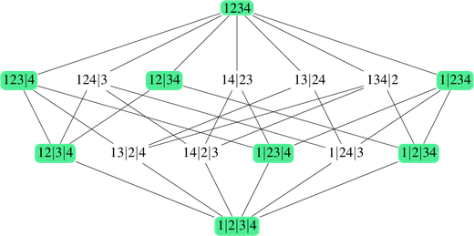
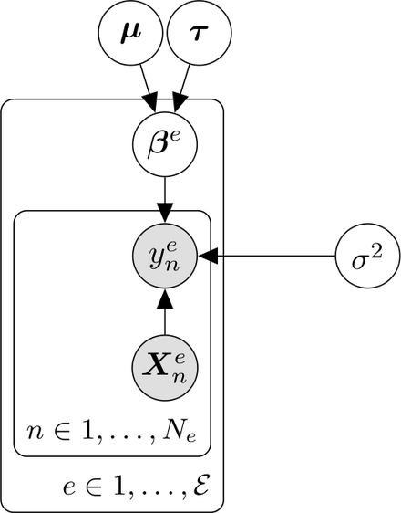
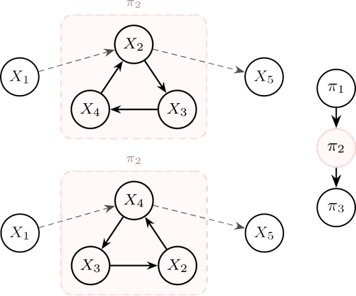

Publications & Talks
Research output
Peer-reviewed papers
2026

Coarsening Causal DAG Models
5th Conference on Causal Learning and Reasoning (CLeaR) 2026 · PMLR · Oral presentation
PMLR v323 · madaleno26b →
2026

Bayesian Hierarchical Invariant Prediction
5th Conference on Causal Learning and Reasoning (CLeaR) 2026 · PMLR · Poster
PMLR v323 · madaleno26a →
Preprints
2026

Coarsening Linear Non-Gaussian Causal Models with Cycles
Francisco Madaleno, Francisco C. Pereira, Alex Markham · arXiv preprint
arXiv:2605.10163 →
Oral presentations
2026
Coarsening Causal DAG Models
Contributed Talk — 5th Conference on Causal Learning and Reasoning (CLeaR)
2025
Bayesian Hierarchical Invariant Prediction
Contributed Talk — 41st Conference on Uncertainty in Artificial Intelligence, Workshop on Causal Abstractions and Representations